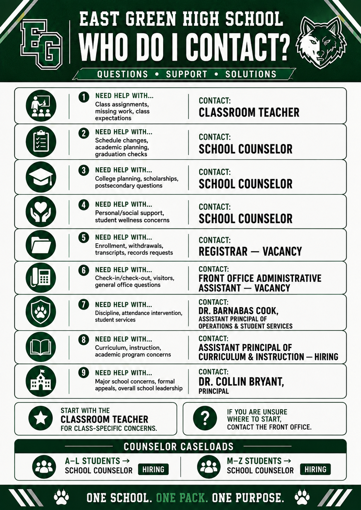

Support for every student.
Student Services coordinates academic planning, scheduling, graduation monitoring, college and career preparation, wellness support, intervention, official records, and front-office services.
School Counselor — A–L
HIRINGStudents remain with the same counselor throughout high school whenever possible. Counselors provide academic, personal/social, and postsecondary guidance.
- Academic planning and schedule guidance
- Graduation progress monitoring
- Attendance/intervention support
- Wellness support and referrals
School Counselor — M–Z
HIRINGBoth counselors carry general caseloads, while department-wide responsibilities can be divided between Student Support and College/Career leadership.
- College and career readiness
- Scholarships and applications
- Dual-enrollment/pathway advising
- Postsecondary planning
Who handles what?
Registrar
VACANCYEnrollment, withdrawals, transcripts, records requests, permanent academic records, schedule documentation, and graduation records.
Front Office Administrative Assistant
VACANCYReception, phones, visitors, student check-in/check-out, general office communication, and daily clerical support.
Dr. Barnabas Cook
Assistant Principal of Operations & Student Services. Primary administrator for major attendance, behavior, discipline, safety, and Student Services concerns.

Start with the right person.
Class assignment or expectation
Start with the classroom teacher.
Schedule, academics, graduation, college/career
Contact your school counselor.
Enrollment, transcript, or official record
Contact the Registrar.
Check-in/out, visitor, or general office question
Contact the Front Office.
Major discipline/attendance issue
Contact Dr. Barnabas Cook.